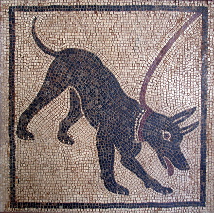

Canis lupus familiaris
El perro o perro doméstico (Canis lupus familiaris) o también llamado can es un mamifero camivoro de la familia de los canidos, que constituye una subespecie del lobo (Canis lupus). Un estudio publicado por la revista Nature revela que, gracias al proceso de domesticación, el organismo del perro se ha adaptado a cierta clase de alimentos, en este caso el almidón. Su tamaño o talla, su forma y pelaje es muy diverso segun la raza. Posee un oido y olfato muy desarrollados, siendo este ültimo su principal organo sensorial. En las razas pequeñas puede alcanzar una longevidad de cerca de 20 años, con atencion esmerada por parte del propietario, de otra forma su vida en promedio es alrededor de los 15 años.
Se cree que el lobo gris, del que es considerado una subespecie. es el antepasado más inmediato. Las pruebas arqueologicas demuestran que el perro ha estado en convivencia cercana con los humanos desde hace al menos 9000 años, pero posiblemente desde hace 14 000 años. Las pruebas fosiles demuestran que los antepasados de los perros modernos ya estaban asociados con los humanos hace 100 000 años. Las investigaciones más recientes indican que el perro fue domesticado por primera vez en el este de Asia. posiblemente en China, sin embargo, es incierto si todos los perros domesticos provienen de un mismo grupo o si el proceso de domesticación se repitió varias veces
|
Comparativa
|
|||||||||||||||||||||||
|  |
|
||||||||||||||||||||||
 |
|||||||||||||||||||||||